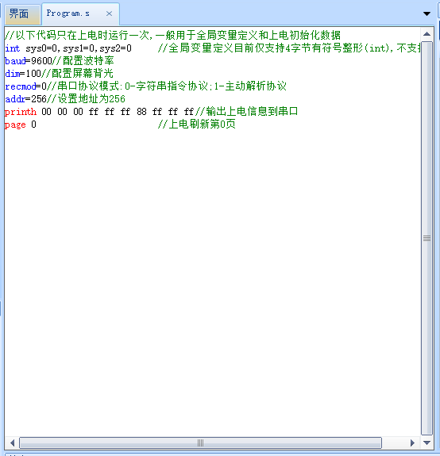
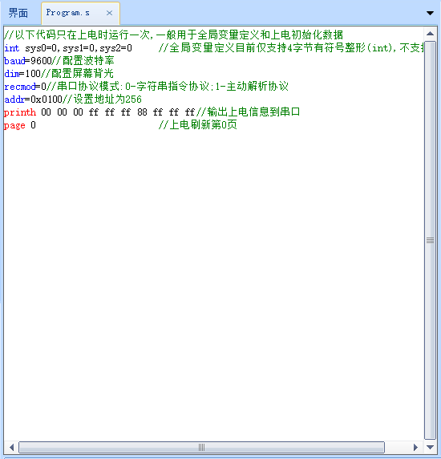
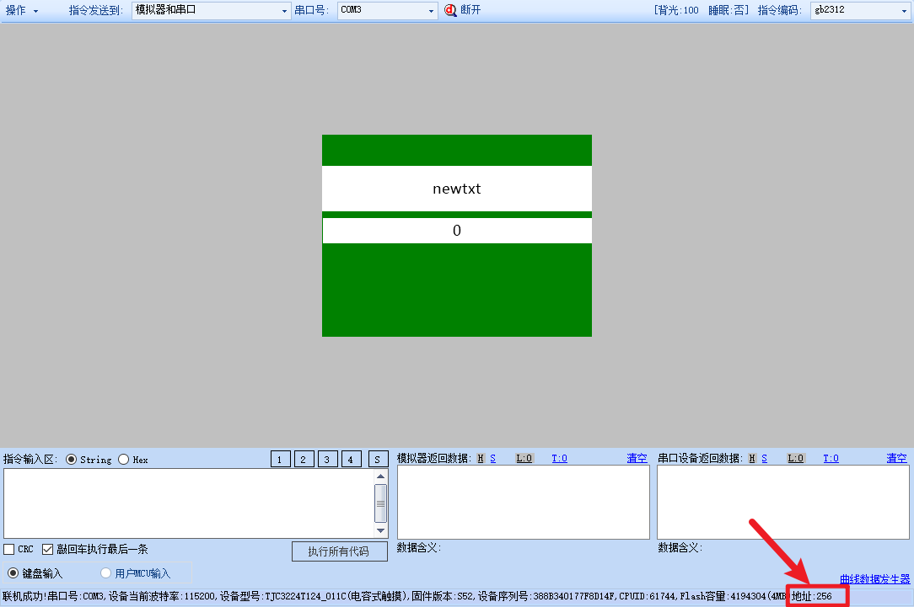
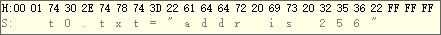
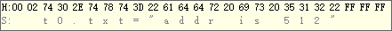
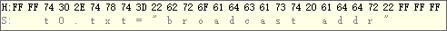

addr-设备地址
给串口屏配置一个地址，可以通过地址来将数据发给不同的串口屏，该指令仅对串口屏实物有效，对模拟器无效，模拟器的地址始终为0
注意
如果你只接了1个屏，不建议配置设备地址。
对于k系列和T系列，断电重启依然有效。对于X系列（X2，X3，X5），addr不支持掉电保存，需要在program.s中进行配置
有效地址范围为256-2815，(即0x0100-0x0aff),0为无地址,65535为广播地址，广播地址只能用于广播数据，不能配置某个设备为广播地址，出厂默认地址为0,即没有地址。
向一个有地址的设备发送指令时，需要在指令前加上2字节的地址数据，以hex方式发送,2字节小端模式,比如设备配置的地址为addr=256,那么发送给他指令时需要在指令前面增加两个字节:0x00 0x01(注意，配置的时候是0x0100,发送指令的时候是低位在前，所以是0x00 0x01跟配置的写法是相反的)。
该配置只能在实物上有效，模拟器是无法测试的。
addr-示例
//十进制写法
addr=256

//十六进制写法
addr=0x0100

以上两条写法是同一个意思，配置的是同一个地址，配置之后有断电保存功能。
当用户想一个串口同时控制多个串口屏独立工作的时候，可以给每个屏设置不同的地址。(注意，在TTL/RS232通信时不能直接将多个触摸屏的TX连接到一起，这样会导致短路。但是可以将多个触摸屏的RX连接到一起，接用户设备串口的TX。)
或者用户使用485总线与屏幕通信，且485总线上存在多个设备的时候，可以给屏幕设置地址。
配置了地址的屏幕在联机时会显示地址

例如，现在将两个触摸屏的RX并联到一起，然后与电脑串口（TTL电平）的TX连接。设置串口屏A的地址0x100(addr=256)，设置串口屏B的地址为0x200（addr=512）。
单片机c语言操作串口发送命令详解：( \x开头为十六进制数据 )
发送给地址0x0100的代码如下：
//控制串口屏A页面上的t0控件显示内容为：addr is 256
printf("\x00\x01t0.txt=\"addr is 256\"\xFF\xFF\xFF")
单片机上发出的数据为：

发送给地址0x0200的代码如下：
//控制串口屏B页面上的t0控件显示内容为：addr is 512
printf("\x00\x02t0.txt=\"addr is 512\"\xFF\xFF\xFF")
单片机上发出的数据为：

广播发送（所有串口屏都能收到,地址为:FFFF）的代码如下：
//控制所有串口屏页面上的t0控件显示内容为：broadcast addr
printf("\xFF\xFFt0.txt=\"broadcast addr\"\xFF\xFF\xFF")
单片机上发出的数据为：
